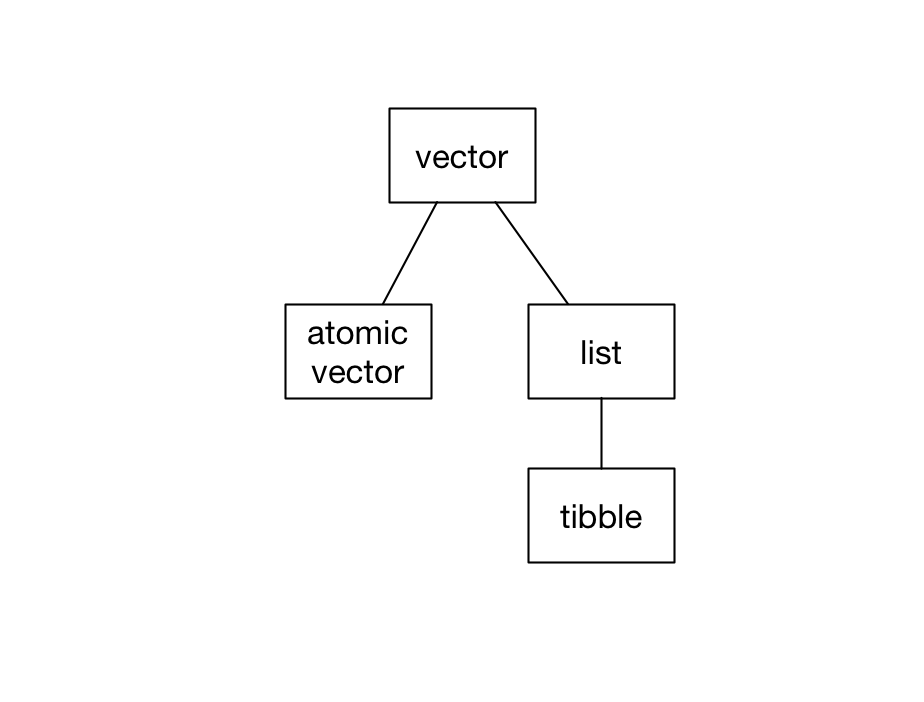

2 Vectors, lists, and tibbles
library(tidyverse)In R, vectors are the most common data structure. In this book, we’ll often represent vectors like this:

Each orange cell represents one element of the vector. As you’ll see, different kinds of vectors can hold different kinds of elements.
There are two kinds of vectors: atomic vectors and lists. Tibbles are a specific kind of list.

In this chapter, we’ll cover these three data structures, explaining how they differ and showing you how to manipulate each one.
2.1 Atomic vectors
Atomic vectors are the “atoms” of R—the simple building blocks upon which all else is built. There are four types of atomic vector that are important for data analysis:
- integer vectors (
<int>) contain integers. - double vectors (
<dbl>) contain real numbers. - character vectors (
<chr>) contain strings made with"". - logical vectors (
<lgl>) containTRUEorFALSE.
Integer atomic vectors contain only integers, double atomic vectors contain only doubles, and so on. Together, integer and double vectors are known as numeric vectors. All vectors can also contain the missing value NA.
In R, single numbers, logicals, and strings are just atomic vectors of length 1, so
x <- "a"creates a character vector. Likewise,
y <- 1.1creates a double vector.
To create atomic vectors with more than one element, use c() to combine values.
logical <- c(TRUE, FALSE, FALSE)
double <- c(1.5, 2.8, pi)
character <- c("this", "is", "a character", "vector")To create an integer vector by hand, you’ll need to add L to the end of each number.
integer <- c(1L, 2L, 3L)Without the Ls, R will create a vector of doubles.
2.1.1 Properties
Vectors (both atomic vectors and lists) all have two key properties: type and length.
You can check the type of any vector with typeof().
typeof(c(1.5, 2.8, pi))
#> [1] "double"
typeof(c(1L, 3L, 4L))
#> [1] "integer"Use length() to find a vector’s length.
length(c("a", "b", "c"))
#> [1] 3Vector can also have named elements.
v_named <- c(guava = 2, pineapple = 4, dragonfruit = 1)
v_named
#> guava pineapple dragonfruit
#> 2 4 1You can access a vector’s names with names().
names(v_named)
#> [1] "guava" "pineapple" "dragonfruit"2.1.2 Subsetting
v is an atomic vector of doubles.
v <- c(1, 2.7, 4, 5)You can subset v to create a new vector with selected elements, ignoring the others.
The [ operator
Here are four ways to subset v using the [ operator.
Positive integers
Subset with a vector of positive integers to extract elements by position.
v[c(1, 2)]
#> [1] 1.0 2.7Note that, in R, indices start at 1, not 0, so the above code extracts the first two elements of v.
You can also use : to create a vector of adjacent integers. The following select the first three elements of v.
v[1:3]
#> [1] 1.0 2.7 4.0Negative integers
Subset with a vector of negative integers to exclude elements. The following code removes the first and third elements of v.
v[-c(1, 3)]
#> [1] 2.7 5.0Names
If a vector has names, you can subset with a character vector.
v_named[c("guava", "dragonfruit")]
#> guava dragonfruit
#> 2 1Logical vectors
If you supply a vector of TRUEs and FALSEs, [ will select the elements that correspond to the TRUEs.

The following extracts just the first and third elements.
v[c(TRUE, FALSE, TRUE, FALSE)]
#> [1] 1 4You’ll rarely subset by typing out TRUEs and FALSEs. Instead, you’ll typically create a logical vector with a function or condition.
For example, the following code selects just the elements of v greater than 2.
v[v > 2]
#> [1] 2.7 4.0 5.0v > 2 results in a logical vector the same length as v.
v > 2
#> [1] FALSE TRUE TRUE TRUE[ then uses this logical vector to subset v, resulting in just the elements of v greater than 2.
v_missing has NAs.
v_missing <- c(1.1, NA, 5, 6, NA)We can pass !is.na(v_missing) into [ to extract out just the non-NA elements.
v_missing[!is.na(v_missing)]
#> [1] 1.1 5.0 6.0The [[ operator
You can extract single elements from a vector with the [[ operator.
v[[2]]
#> [1] 2.7You’ll get an error if you try to use [[ to select more than one element.
v[[2:3]]
#> Error in v[[2:3]]: attempt to select more than one element in vectorIndexFor named vectors, the [ operator creates a subset of the original vector with the specified elements.
v_named["guava"]
#> guava
#> 2The [[ operator returns only the extracted element.
v_named[["guava"]]
#> [1] 2As you’ll see in the Lists section that the distinction between [ and [[ becomes more important with lists and tibbles.
2.1.3 Applying functions
Vectors are central to programming in R, and many R functions are designed to work with vectors.
You already saw how to call typeof() to return the type of a vector.
typeof(v)
#> [1] "double"sum() sums a vector’s elements.
sum(v)
#> [1] 12.7You can use sum() with both numeric (i.e., double and integer) vectors, as well as with logical vectors.
logical <- c(TRUE, TRUE, FALSE)
sum(logical)
#> [1] 2When applied to a logical vector, sum() returns the number of TRUEs.
mean() works similarly.
mean(v)
#> [1] 3.17
mean(logical)
#> [1] 0.667The Base R Cheat Sheet has some other basic helpful functions, particularly under the Vector Functions and Math Functions sections.
2.1.4 Augmented vectors
Augmented vectors are atomic vectors with additional metadata. There are four important augmented vectors:
factors
<fct>, which are used to represent categorical variables can take one of a fixed and known set of possible values (called the levels).ordered factors
<ord>, which are like factors but where the levels have an intrinsic ordering (i.e. it’s reasonable to say that one level is “less than” or “greater than” another level).dates
<dt>, record a date.date-times
<dttm>, which are also known as POSIXct, record a date and a time.
For now, you just need to recognize these when you encounter them. You’ll learn how to create each type of augmented vector later in the course.
2.2 Lists
Unlike atomic vectors, which can only contain a single type, lists can contain any collection of R objects.
2.2.2 Flattening
You can flatten a list into an atomic vector with unlist().
y <- list(1, 2, 4)
y
#> [[1]]
#> [1] 1
#>
#> [[2]]
#> [1] 2
#>
#> [[3]]
#> [1] 4unlist(y)
#> [1] 1 2 4unlist() returns an atomic vector even if the original list contains other lists or vectors.
z <- list(c(1, 2), c(3, 4))
z
#> [[1]]
#> [1] 1 2
#>
#> [[2]]
#> [1] 3 4unlist(z)
#> [1] 1 2 3 42.3 Tibbles
Tibbles are actually lists.
typeof(mpg)
#> [1] "list"Every tibble is a named list of vectors, each of the same length.

These vectors form the tibble columns.
Take the tibble mpg.
mpg
#> # A tibble: 234 × 11
#> manufacturer model displ year cyl trans drv cty hwy fl class
#> <chr> <chr> <dbl> <int> <int> <chr> <chr> <int> <int> <chr> <chr>
#> 1 audi a4 1.8 1999 4 auto(l5) f 18 29 p compa…
#> 2 audi a4 1.8 1999 4 manual(m5) f 21 29 p compa…
#> 3 audi a4 2 2008 4 manual(m6) f 20 31 p compa…
#> 4 audi a4 2 2008 4 auto(av) f 21 30 p compa…
#> 5 audi a4 2.8 1999 6 auto(l5) f 16 26 p compa…
#> 6 audi a4 2.8 1999 6 manual(m5) f 18 26 p compa…
#> # … with 228 more rowsEach variable in mpg (manufacturer, model, displ, etc.) is a vector. manufacturer is a character vector, displ is a double vector, and so on. Each vector has length 234.
2.3.1 Creation
There are two ways to create tibbles by hand. First, you can use tibble().
my_tibble <-
tibble(
x = c(1, 9, 5),
y = c(TRUE, FALSE, FALSE),
z = c("apple", "pear", "banana")
)
my_tibble
#> # A tibble: 3 × 3
#> x y z
#> <dbl> <lgl> <chr>
#> 1 1 TRUE apple
#> 2 9 FALSE pear
#> 3 5 FALSE bananatibble() takes individual vectors and turns them into a tibble.
Second, you can use tribble().
my_tibble <-
tribble(
~x, ~y, ~z,
1, TRUE, "apple",
9, FALSE, "pear",
5, FALSE, "banana"
)
my_tibble
#> # A tibble: 3 × 3
#> x y z
#> <dbl> <lgl> <chr>
#> 1 1 TRUE apple
#> 2 9 FALSE pear
#> 3 5 FALSE bananaFor small datasets, tribble() is likely to be less error prone, since the values for each row are next to each other.
2.3.2 Subsetting
There are several ways to extract variables out of tibbles. Tibbles are lists, so [[ and $ work.
my_tibble[["x"]]
#> [1] 1 9 5
my_tibble$x
#> [1] 1 9 5Use pull(), the dplyr equivalent, when you want to use a pipe.
my_tibble %>%
pull(x)
#> [1] 1 9 5Note that pull(), like [[ and $, returns just the vector of values for a given variable.
[ also works with tibbles.
my_tibble["x"]
#> # A tibble: 3 × 1
#> x
#> <dbl>
#> 1 1
#> 2 9
#> 3 5For a pipe, use the dplyr function select().
my_tibble %>%
select(x)
#> # A tibble: 3 × 1
#> x
#> <dbl>
#> 1 1
#> 2 9
#> 3 5Whereas pull() returns a vector, select() returns a tibble.
2.3.3 Dimensions
Printing a tibble tells you the column names and overall dimensions.
mpg
#> # A tibble: 234 × 11
#> manufacturer model displ year cyl trans drv cty hwy fl class
#> <chr> <chr> <dbl> <int> <int> <chr> <chr> <int> <int> <chr> <chr>
#> 1 audi a4 1.8 1999 4 auto(l5) f 18 29 p compa…
#> 2 audi a4 1.8 1999 4 manual(m5) f 21 29 p compa…
#> 3 audi a4 2 2008 4 manual(m6) f 20 31 p compa…
#> 4 audi a4 2 2008 4 auto(av) f 21 30 p compa…
#> 5 audi a4 2.8 1999 6 auto(l5) f 16 26 p compa…
#> 6 audi a4 2.8 1999 6 manual(m5) f 18 26 p compa…
#> # … with 228 more rowsTo access the dimensions directly, you have three options:
dim(diamonds)
#> [1] 53940 10
nrow(diamonds)
#> [1] 53940
ncol(diamonds)
#> [1] 10To get the variable names, use names():
names(diamonds)
#> [1] "carat" "cut" "color" "clarity" "depth" "table" "price"
#> [8] "x" "y" "z"